Swanage, 29th-31st May 2021
One small positive of lockdown meant I had the funds to replace some of my aging dive kit and my ill-fitting dry suit. Having spent an unexpected fortune getting regulators and cylinders serviced (tip: put your transmitter on a short hose to prevent people breaking it by using it as a handle!) and following a brief test at Wraysbury it was finally time for our annual pilgrimage to Swanage.
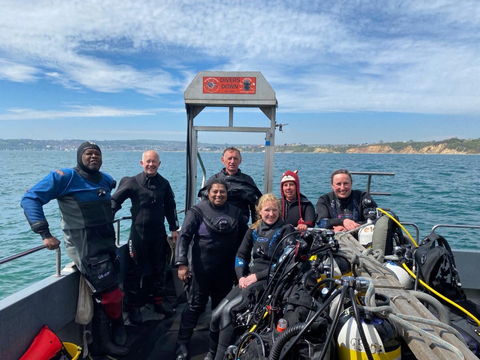
Leaving home slightly earlier than normal didn’t make my journey any quicker as most of southern England also seemed to be heading towards the south coast, but I arrived just in time to join the rest of the gang for supper in the pub.
I’ve not needed to get up particularly early since we’ve been in lockdown and getting up on a Saturday morning to get a place on the pier at 7am was a slight shock for the system but worth the effort. We didn’t have a really early dive that morning so this allowed plenty of time for assembling the remaining parts on my camera, a wander round Swanage to see what had changed and a breakfast in the cafe.
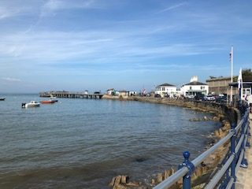
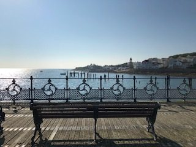
The first dive was under the Pier; it was high tide so that made getting in the water down the steps a little easier, no needing to stagger/crawl painfully along the rocks battered by the waves which is even more challenging with a bulky camera. We had a good pootle under the pier. The visibility wasn’t good but we found things to look at - mostly admittedly crabs – and I had fun trying to use a new flash and snoot that I had only tested previously at the kitchen table. It proved to be an excellent opportunity to take photos worthy of the Crap Fish Photography group – getting the snoot pointing in the right place was definitely an art I had yet to master and in poor visibility the backscatter was lit up beautifully!
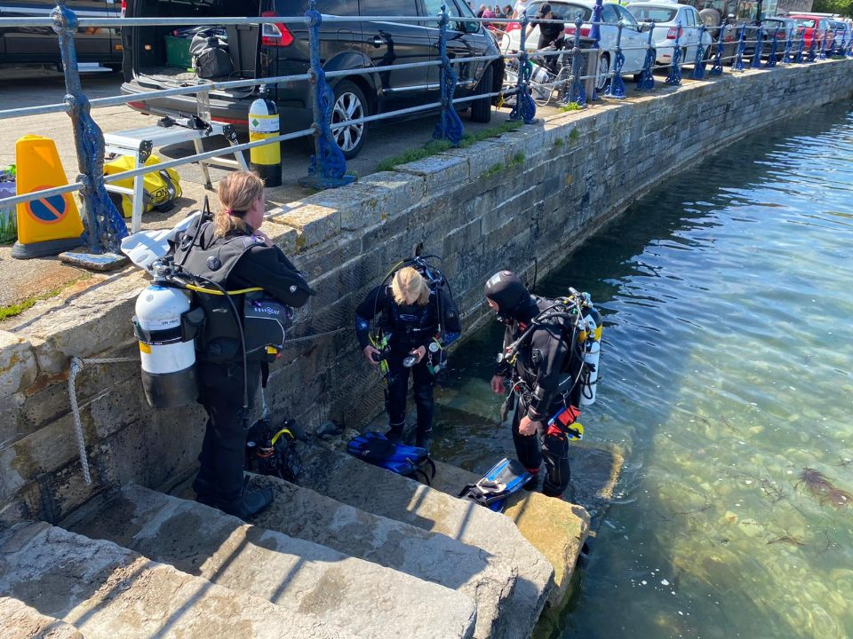
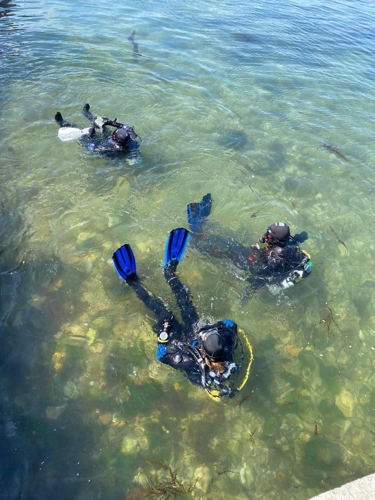
Our first boat dive was Old Harry’s Drift. This will always be memorable site for me as it was where I did my first sea dive back in 1996; I saw one crab and as I had only dived inland lakes before I was starting to wonder why people dived in the UK. As I hadn’t dived off a boat in the UK for about eighteen months I was slightly nervous but there was nothing to worry about. Having put the DSMB up, clipped on with a buddy line (even though my buddy and I have done hundreds of dives each we do it for convenience) we continued to fly along the bottom in a cracking 2 knot drift. The visibility was two metres at best but there was still lots to see including dog fish, crabs (of course), dover sole, a variety of anemones, lots of leathery sea squirts, even more slipper limpets, sponges, queen scallops and deadmen’s fingers some with baby sea slugs on them. At the end of the dive we ascended back up to the safety stop then out … eventually, whilst we were barely at 15m the DSMB line was reeled out such a long way with a small reel it took a few minutes to reel the line in again. Whilst you could argue that I shouldn’t have let the line out so far, I also decided that whilst its more fashionable to use a smaller reel nowadays and they are less bulky they are also more fiddly and I decided to switch back to my larger reel when diving in the UK.
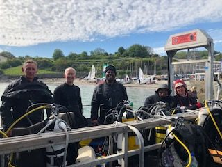
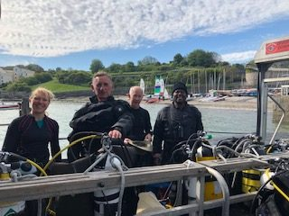
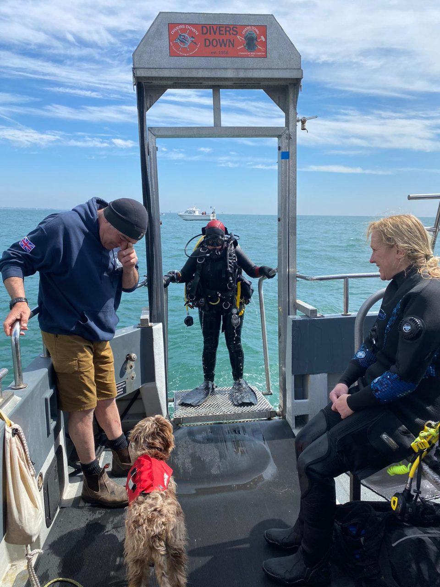
On day two we did the Fleur de Lys and the barge. Whilst its broken up considerably more now the Fleur was a bigger boat than I had remembered. It was still too small a dive site for a boat of ten (and the second boat not long behind us) and the bottom quickly got kicked up so having circulated it a couple of times once my buddy and I had found the line to the barge we headed off there where the visibility was better. If only I had brought my camera! We saw so many nudibranchs including yellow-edged polycera, orange clubbed sea slug, thorny doris, and the violet seaslug, plus lots of eggs and a sea hare. There was lots to see and we didn’t need to drift off the boat.
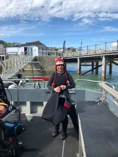
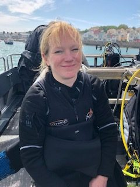
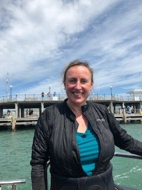
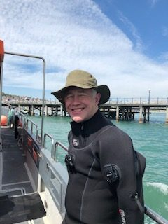
Our second dive that day was on the Valentine Tanks. We were dropped in just before slack so when we first went down my buddy and I needed to swim quite hard against the current as we headed along the line to the second tank but before long the current eased. After what seemed like a long swim without much to see (they have changed the position of the line between the two tanks so now you have to follow a V underwater to get to the second tank) we were rewarded with conger eels, starfish, more nudis, wrasse, a crystal sea slug (see photo). I was also unsuccessfully trying to get my snoot to point at a topshell at until another buddy pair (not from our club) crashed straight through my site and we decided it was time to go back to the first tank. There we saw another conger under the rock plus lobster and a double spiral worm (photo) in crevices of the tank. Another good dive.
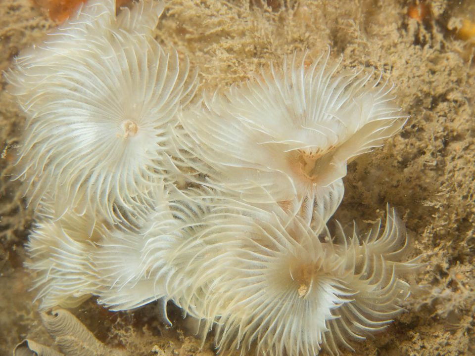
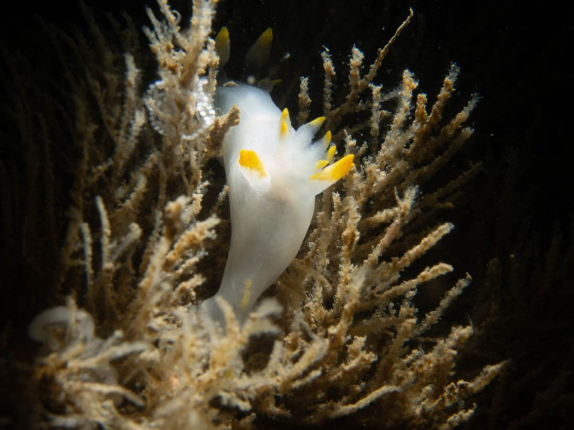
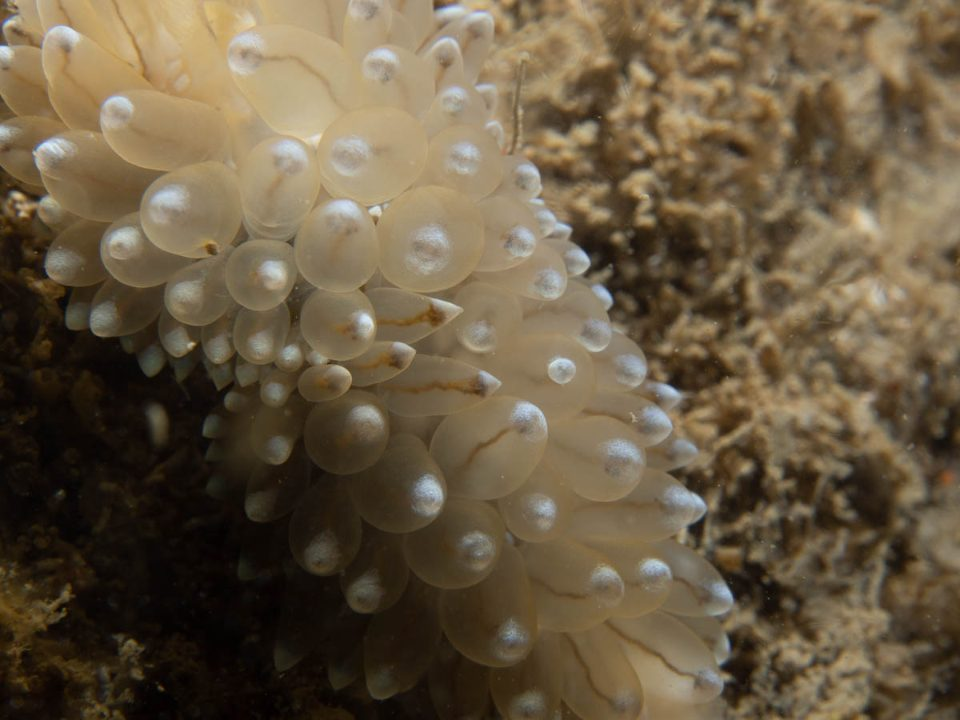
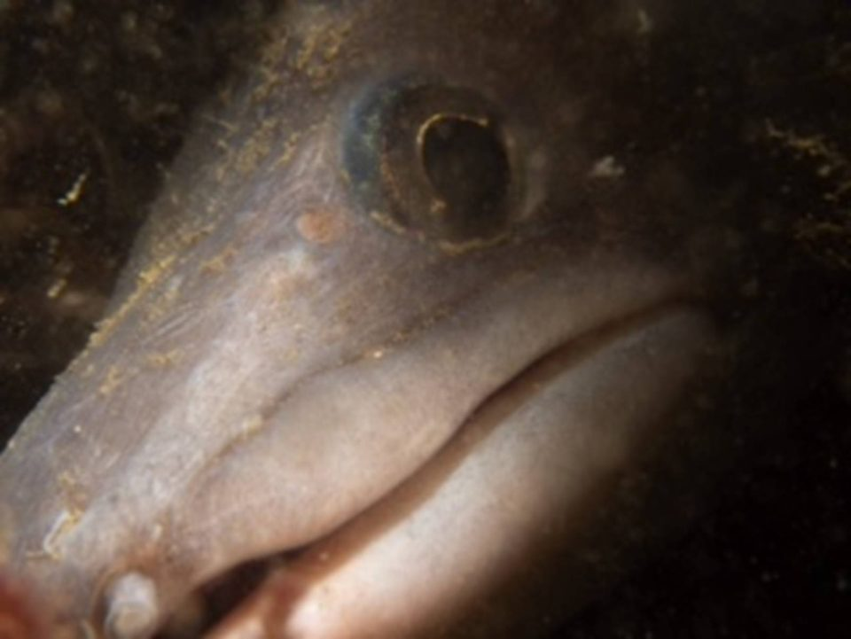
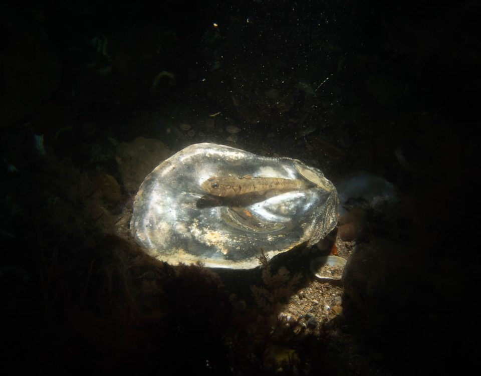
As most UK divers are painfully aware, when we go on dive trips we often end up having to do something else instead. This means we regularly end up going walking and the more adventurous of us have even tried our hands at kite surfing. Whilst the weather was glorious and the club had two more dives organised for the Monday (the first being the Kyarra) I decided to go stand up paddleboarding off the pier instead. Having only done it a handful of times on a lake I realised once I was on the board that it was quite a bit harder doing it on the sea. Fortunately all those with a Go Pro on the trip were on the dive boat so there is no recorded evidence that I spent the first thirty minutes just trying to stand up and remain standing for more than ten seconds … by the time the dive boats came back in I was up and making it look like I knew what I was doing.
Whilst it was a smaller group than our usual Swanage trips, all in all it was another successful trip, I have got my UK diving legs back on and am looking forward to diving again with the seals in Farnes in September.
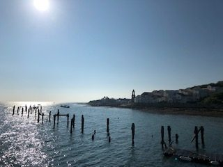
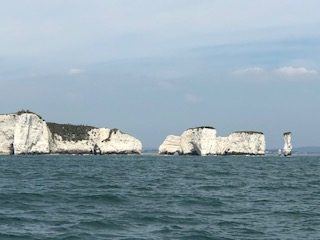
Reported by Sarah A, Photos from Sarah A and Preeda